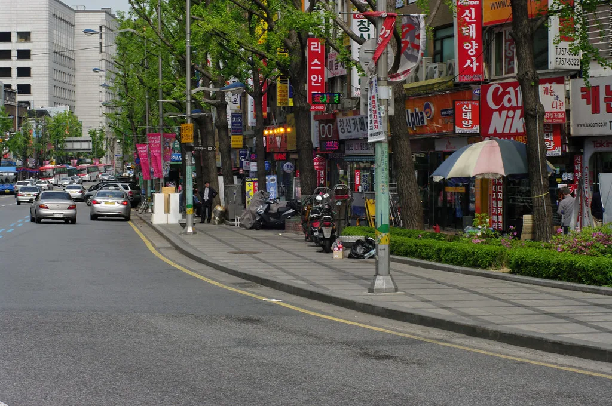
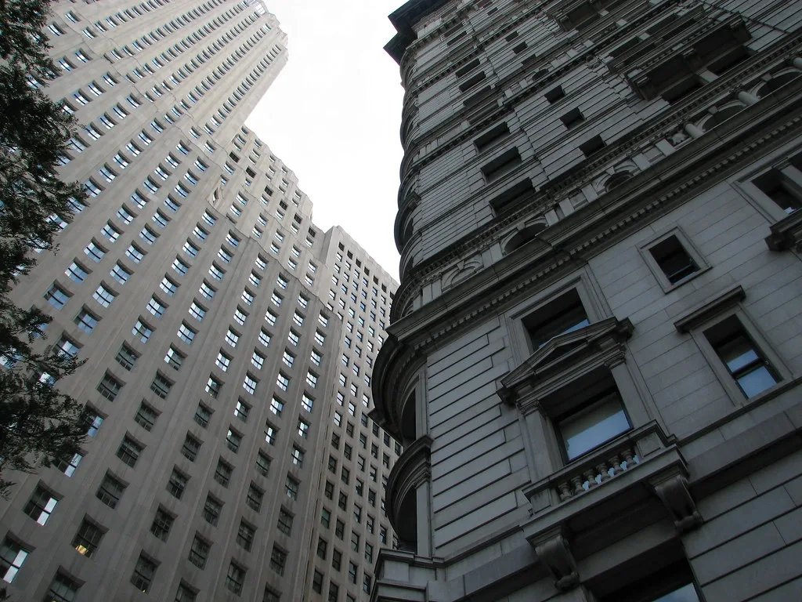

금융노조 총파업 돌입…광화문 집회, "국책은행 지방이전 저지·주 4.5일제"
전국금융산업노동조합이 9월 4일 총파업에 돌입했다. 금융노조는 이날 오전 11시 30분부터 오후 3시까지 서울 종로구 동화면세점 앞에서 덕수궁 대한문 방향으로 이어지는 세종대로 일대에서 총파업 집회를 열었다. 노조는 집회 신고 규모를 3만 명으로 잡았고, 실제로는 2만 명 이상의 조합원이 참여할 것으로 예상했다. 이번 파업은 사용자 측과의 산별중앙교섭이 성과 없이 끝난 데 따른 쟁의행위로, 금융노조가 조합 차원의 총파업에 나선 것은 최근 몇 년 사이 되풀이돼 온 흐름이다.
앞서 금융노조는 지난 8월 조합원 찬반투표에서 투표에 참여한 6만8878명 가운데 6만6154명, 96.1%의 찬성으로 쟁의행위를 가결했다. 금융노조에는 시중은행과 지방은행, 국책은행뿐 아니라 신용보증기금·기술보증기금·한국자산관리공사·한국주택금융공사·금융결제원·코스콤 등 금융 공공기관과 유관기관까지 모두 42개 지부가 소속돼 있다. 조합원 수가 많은 만큼 파업 참여 규모와 실제 영향은 지부별로 크게 갈릴 것으로 보인다. 노조는 지난달 여의도에서 총파업 결의대회를 열어 세를 과시한 뒤 이날 1차 총파업에 나섰다.

산별중앙교섭은 임금 인상률과 근로시간 단축, 지방 이전 문제를 놓고 노사가 접점을 찾지 못하면서 사실상 결렬됐다. 사용자 측 협의체인 금융산업사용자협의회는 경영 여건을 이유로 노조 요구를 그대로 수용하기 어렵다는 입장이고, 노조는 은행권이 최근 몇 년간 이자 이익으로 사상 최대 실적을 냈다는 점을 들어 요구의 정당성을 주장하고 있다. 양측의 인식 차가 큰 만큼 조정 절차가 다시 가동되더라도 타결까지는 시간이 걸릴 것이라는 전망이 우세하다.
올해 투쟁의 최대 현안은 정부가 추진하는 공공기관 지방 이전에 맞서 한국산업은행·IBK기업은행·한국수출입은행 등 국책은행의 지방 이전을 저지하는 것이다. 정부는 수도권 잔류를 최소화한다는 방침을 밝혔지만, 노조는 금융 인력 이탈과 산업 경쟁력 저하를 이유로 강하게 반발하고 있다. 노조는 이와 함께 주 4.5일제 도입, 실질임금 삭감 중단과 임금 인상, 청년 채용 확대, 정년 연장과 임금피크제 개선 등을 요구 조건으로 내걸었다.
실제 고객이 느끼는 불편은 제한적일 전망이다. 2022년 9월과 지난해 9월 총파업 당시 4대 시중은행의 참여율은 1% 안팎에 그쳤고, 영업점 업무는 큰 혼란 없이 정상적으로 이뤄졌다. 이번에도 시중은행 영업점은 대체로 정상 운영되고 인터넷·모바일뱅킹도 평소처럼 이용할 수 있을 것으로 예상된다. 다만 산업은행은 필수 인력을 뺀 1900~2000명, 수출입은행은 조합원의 약 80%가 파업에 참여할 것으로 노조는 보고 있어 국책은행 일부 창구 업무에는 지연이 생길 수 있다.

파업 이후 국면은 사용자 측인 금융산업사용자협의회와의 교섭 재개 여부에 달려 있다. 노조는 1차 총파업으로도 요구가 받아들여지지 않으면 2차 총파업에 나서겠다고 예고한 상태다. 국책은행 지방 이전은 국가균형발전이라는 정책 목표와 금융산업의 인력·경쟁력 문제가 정면으로 맞서는 사안이라, 이전 대상 기관과 시기를 둘러싼 이견이 쉽게 좁혀지기 어렵다는 관측이 나온다.
정부는 노정 대화를 통해 접점을 찾겠다는 입장이지만, 공공기관 2차 지방 이전 계획이 구체화될수록 금융권의 반발도 커지는 모양새다. 금융노조 총파업이 해마다 반복되는 배경에는 근로조건 개선 요구와 함께, 공공성과 산업 논리가 부딪히는 금융업 특유의 구조가 자리 잡고 있다. 이번 파업의 파장과 후속 교섭 결과는 향후 공공기관 이전 정책 전반에도 영향을 줄 것으로 보인다.